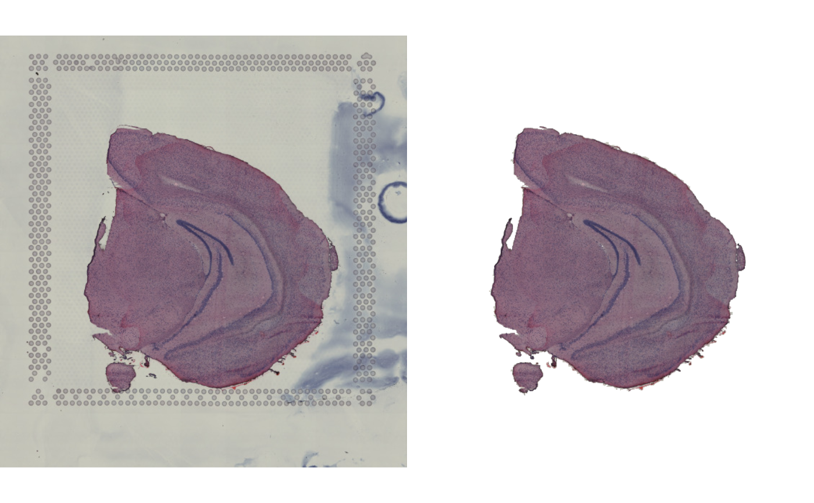

Mask images
mask-images.RdImage masking can sometimes be useful when you want to remove background from an H&E image. This is usually only relevant when creating figures. This function provides a simple image masking technique based on blob extraction. Since image masking is a challenging task, it is not guaranteed that it will work on all H&E images. Certain artifacts can be particularly difficult to remove, for example bubbles or if the tissue stain hasn't been removed properly.
Even if some artifacts are detected by the algorithm, you can provide a set of spot coordinates that will be used to try to filter out artifacts that are not covered by spots.
Note that this method is only useful on H&E images. Other stains or image types (e.g. immunofluorescence images) will most likely not work.
Usage
MaskImages(object, ...)
# S3 method for default
MaskImages(
object,
xy_coords = NULL,
method = c("magentaSeg", "blurSeg"),
custom_method = NULL,
minPixels = 100,
verbose = TRUE,
...
)
# S3 method for Seurat
MaskImages(
object,
section_numbers = NULL,
method = c("magentaSeg", "blurSeg"),
custom_method = NULL,
minPixels = 100,
verbose = TRUE,
...
)Arguments
- object
An object
- ...
Arguments passed to other methods
- xy_coords
Optional tibble with spot coordinates matching the input image
- method
Segmentation method to use. Choose one of "magentaSeg" or "blurSeg"
- custom_method
A function that takes a "magick-image" object as input and returns a segmented "magick-image" as output. See section "custom masking" below for more details.
- minPixels
Minimum area for blobs used to remove small artifacts given in pixels.
- verbose
Print messages
- section_numbers
An integer vector specifying samples to mask
Custom masking
If the masking fails, you can write your own masking function with magick. This function needs to take an object of class "magick-image" as input and return an object of the same class. The image needs to be segmented with blob-extraction to work properly. Visit the magick R package [website](https://cran.r-project.org/web/packages/magick/vignettes/intro.html) for more information on how to apply magick methods for segmentation. You can find a basic example below or visit the semla website for more detailed instructions.
See also
Other image transformations:
RigidTransformImages(),
RunAlignment()
Examples
library(semla)
library(magick)
library(dplyr)
# Load image
lowresimagefile <- system.file("extdata/mousebrain/spatial",
"tissue_lowres_image.jpg",
package = "semla")
im <- image_read(lowresimagefile)
# Load coordinates
coordinatesfile <- system.file("extdata/mousebrain/spatial",
"tissue_positions_list.csv",
package = "semla")
xy <- LoadSpatialCoordinates(coordinatefiles = coordinatesfile)
#> ℹ Loading coordinates:
#> → Finished loading coordinates for sample 1
#> ℹ Collected coordinates for 2560 spots.
# Load scalefactors
json <- system.file("extdata/mousebrain/spatial",
"scalefactors_json.json",
package = "semla")
scalefactors <- jsonlite::read_json(path = json)
xy <- xy |>
mutate(across(pxl_row_in_fullres:pxl_col_in_fullres,
~ round(.x*scalefactors$tissue_lowres_scalef))) |>
select(pxl_row_in_fullres:pxl_col_in_fullres)
im_masked <- MaskImages(im, xy_coords = xy)
#> ℹ Segmenting image using blob extraction
#> ℹ Using method 'magentaSeg'
#> ℹ Filtering out blobs with fewer than 100 pixels
#> ℹ Filtering out blobs that do not overlap with provided coordinates
#> ✔ Composed masked image from selected blobs
# Save graphical parameters
oldpar <- par(no.readonly = TRUE)
# Plot masked images
par(mfrow = c(1, 2), mar = c(0, 0, 0, 0))
im |> as.raster() |> plot()
im_masked |> as.raster() |> plot()

# Reset graphical parameters
par(oldpar)
library(semla)
# Load example Visium data
se_mbrain <- readRDS(system.file("extdata/mousebrain", "se_mbrain", package = "semla"))
se_mbrain <- se_mbrain |> LoadImages()
#>
#> ── Loading H&E images ──
#>
#> ℹ Loading image from /private/var/folders/zb/1fj07x_5343fvs_k28gnm1z80002xs/T/Rtmp9Mygph/temp_libpath5c3d3de4f563/semla/extdata/mousebrain/spatial/tissue_lowres_image.jpg
#> ℹ Scaled image from 600x565 to 400x377 pixels
#> ℹ Saving loaded H&E images as 'rasters' in Seurat object
# Plot masked images
ImagePlot(se_mbrain)
 # \donttest{
# Using a custom method
custom_fkn <- function(object) {
object |>
image_convert(colorspace = "cmyk") |>
image_channel(channel = "Magenta") |>
image_threshold(threshold = "7%") |>
image_threshold(threshold = "7%", type = "white") |>
image_connect(connectivity = 1)
}
se_mbrain <- se_mbrain |> LoadImages()
#>
#> ── Loading H&E images ──
#>
#> ℹ Loading image from /private/var/folders/zb/1fj07x_5343fvs_k28gnm1z80002xs/T/Rtmp9Mygph/temp_libpath5c3d3de4f563/semla/extdata/mousebrain/spatial/tissue_lowres_image.jpg
#> ℹ Scaled image from 600x565 to 400x377 pixels
#> ℹ Saving loaded H&E images as 'rasters' in Seurat object
se_mbrain <- MaskImages(se_mbrain, custom_method = custom_fkn)
#>
#> ── Masking image(s) ──
#>
#> ℹ Found 1 samples
#> ℹ Fetched images
#> ℹ Fetched spot coordinates
#> ℹ Processing sample 1
#> ℹ Segmenting image using blob extraction
#> ℹ Using custom method
#> ℹ Filtering out blobs with fewer than 100 pixels
#> ℹ Filtering out blobs that do not overlap with provided coordinates
#> ✔ Composed masked image from selected blobs
#> ✔ Returning Seurat object with masked images
ImagePlot(se_mbrain)
# \donttest{
# Using a custom method
custom_fkn <- function(object) {
object |>
image_convert(colorspace = "cmyk") |>
image_channel(channel = "Magenta") |>
image_threshold(threshold = "7%") |>
image_threshold(threshold = "7%", type = "white") |>
image_connect(connectivity = 1)
}
se_mbrain <- se_mbrain |> LoadImages()
#>
#> ── Loading H&E images ──
#>
#> ℹ Loading image from /private/var/folders/zb/1fj07x_5343fvs_k28gnm1z80002xs/T/Rtmp9Mygph/temp_libpath5c3d3de4f563/semla/extdata/mousebrain/spatial/tissue_lowres_image.jpg
#> ℹ Scaled image from 600x565 to 400x377 pixels
#> ℹ Saving loaded H&E images as 'rasters' in Seurat object
se_mbrain <- MaskImages(se_mbrain, custom_method = custom_fkn)
#>
#> ── Masking image(s) ──
#>
#> ℹ Found 1 samples
#> ℹ Fetched images
#> ℹ Fetched spot coordinates
#> ℹ Processing sample 1
#> ℹ Segmenting image using blob extraction
#> ℹ Using custom method
#> ℹ Filtering out blobs with fewer than 100 pixels
#> ℹ Filtering out blobs that do not overlap with provided coordinates
#> ✔ Composed masked image from selected blobs
#> ✔ Returning Seurat object with masked images
ImagePlot(se_mbrain)
 # }
# }